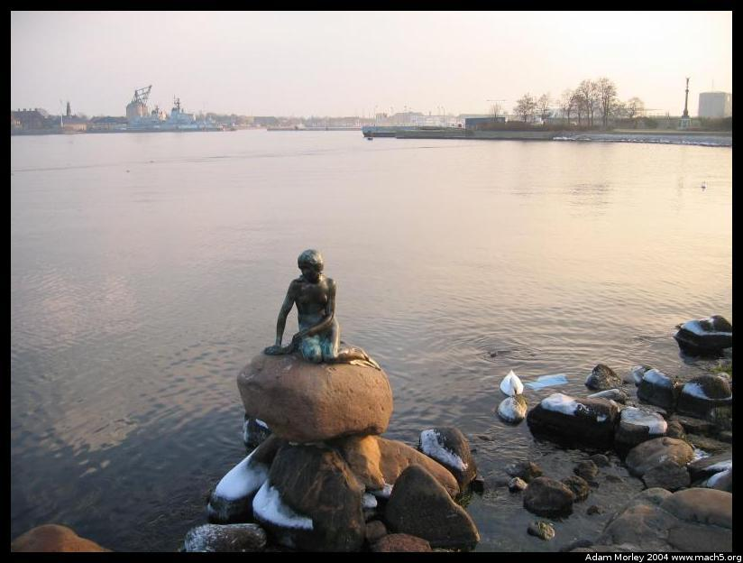
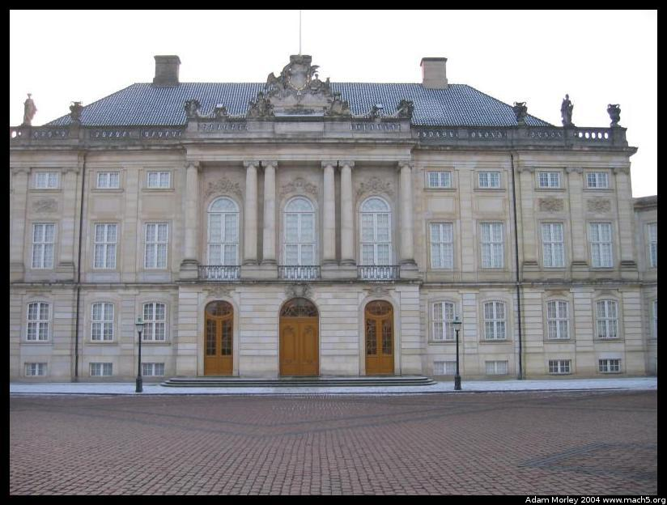
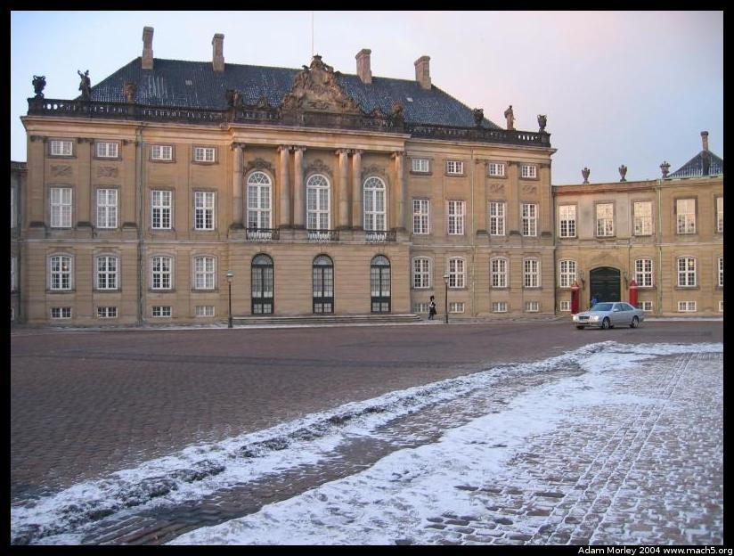
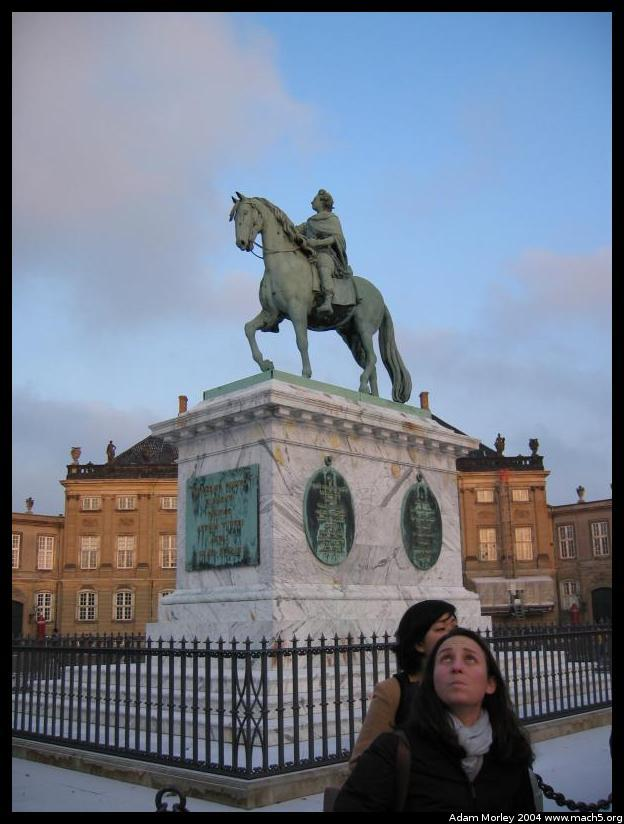
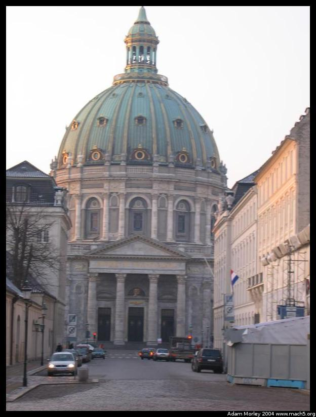

After the opening ceremony at Frue Plads, we went on a sightseeing tour by bus. I forgot (again) the whole camera thing and instead paid copious amounts of attention to our tour guide.

This is where I remembered to take pictures again -- after all, who doesn't snap a photo of the little mermaid. The harbor is in the background, with the new opera house to the left. If you can't see it, its because its not in the picture.
Here's Queen Margrethe II's royal palace. Well, technically one of the four. As you can see, its a total shack. Named Amalienborg, it consists of four separate palaces named after previous rulers, namely Christian VII, VIII, IX and Frederik VIII.
Another one of the four palaces. The Queen only lives in one of them, the others are for other family members and, you know, the other royal type things.
A statue of one of Denmark's many kings, in the center of all four of the parts of the Queen's palaces. I seem to remember something about this King going crazy. In the background, another palace.
This is a famous church my host mom recommended I tour (I haven't gone yet). The church is not crooked, but I was. Its located directly opposite the new opera house something like this:
_______
street / \ | |
| / \ | |
church |--------- palace | | harbor | opera house complete with cantilevered roof that would make
| \ / | | Frank Lloyd Wright proud
| \______/ | |
|
More details (including a picture taken with a wide angle and polarizer) on Amalienborg is here. I'm reminded of why I shold bring my 35mm along, especially given my habit of taking crooked pictures with the digital.
Adam can be reached at adam dot morley at gmail dot com